1. Introduction to Rizviz ERP
Rizviz ERP is a comprehensive Enterprise Resource Planning system developed exclusively for Rizviz International Impex. It is designed to unify and streamline all core business processes across multiple companies and branches into a single, integrated platform.
This Administrator Manual is intended for users with the Admin role who manage the full Rizviz ERP environment — including HR, payroll, assets, projects, recruitment, interviews, leads, reports, and security audit.
Key Features
- Multi-Company / Multi-Branch architecture
- Role-based access control for secure, permission-driven usage
- Centralized employee and HR management with live UAT database
- Real-time payroll and salary processing with payslip generation
- Asset inventory tracking — register, assign, and return
- Project resource management and team allocations
- Interview data synced from Interview Software.xlsx with change tracking
- Leads pipeline derived from interviews or added manually
- Corporate Reports Center — PDF and Excel export
- Security Audit Registry — login and payroll action logging
System Requirements
| Requirement | Details |
|---|---|
| Browser | Google Chrome recommended (version 90+) |
| Frontend URL | Local: http://localhost:3000Production (Vercel): https://rizviz-interviews-portal.vercel.app |
| Backend API | Local: http://localhost:5000Production (Railway): https://rizviz-interviewsportal-production.up.railway.app |
| Interview Excel | Local: Interview Software.xlsxProduction: last_uploaded_excel.xlsx (synced automatically via watcher/upload) |
| Database | SQL Server UAT or Production Database as configured on Railway |
| Credentials | Valid Admin credentials (e.g. Username: Rizviz, Password: 5121472) |
Intended Audience
This manual is intended for System Administrators and Admin-role users who require full access to all ERP modules and enterprise-wide data.
2. Login Module
The Login Module is the entry point to Rizviz ERP. It ensures that only authorized users can access the platform by verifying identity through company selection, branch selection, username, and password.
URL: localhost:3000/login or rizviz-interviews-portal.vercel.app/login
Login Screen Overview
When you navigate to the ERP login URL, the Account Login screen is displayed:
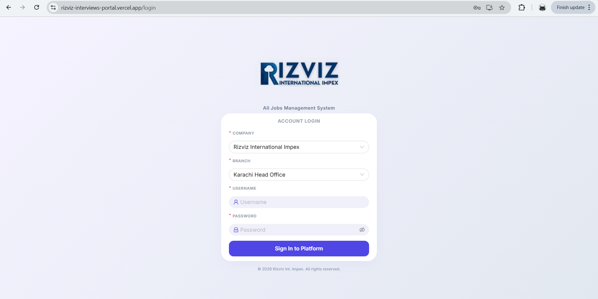
Below the screenshot, the login page consists of:
- Header — "Account Login" title in bold dark blue
- Company dropdown — Select legal entity (e.g. Rizviz International Impex)
- Branch dropdown — Enabled after company selection (e.g. Lahore Tech Branch)
- Username field — Person icon; enter assigned username
- Password field — Lock icon; eye icon toggles visibility
- Sign In to Platform — Purple submit button
- Footer — "© 2026 Rizviz Int. Impex. All rights reserved."
Login Form — Field Reference
| Field Name | Status | Description |
|---|---|---|
| Company | Required | Legal entity (e.g. Rizviz International Impex) |
| Branch | Required | Branch office assigned to the user |
| Username | Required | Assigned ERP login name |
| Password | Required | Secret password; masked with dots (●) by default |
Step-by-Step Login Instructions
- Open the ERP URL in your browser:
localhost:3000/loginor the production portal URL. - Select Company — Rizviz International Impex.
- Select Branch — e.g. Lahore Tech Branch.
- Enter your Username and Password.
- Click Sign In to Platform.
- Admin users are redirected to the Management Dashboard.
Available Branches
- Karachi Head Office
- Lahore Tech Branch
- Islamabad Executive Branch
Password Field — Behavior
The Password field masks characters by default. Click the eye icon to reveal plain text; click again to re-mask.
Sign In Button — Behavior
- Success — Redirect to Management Dashboard (Admin).
- Empty field — System highlights missing field.
- Invalid credentials — Authentication error displayed.
Login — Troubleshooting
| Issue | Resolution |
|---|---|
| Branch dropdown empty | Select Company first. |
| Invalid username/password | Verify credentials; check Caps Lock; contact IT. |
| Page not loading | Clear cache; enable JavaScript; use Chrome. |
| Forgot password | Contact system administrator — no self-service reset. |
2.1 Workspace Initialization
Upon successful login, if the platform does not yet contain active interview data or the system session requires onboarding, the administrator is presented with the Initialize Workspace screen. This interface forces data loading and schema checks to prepare the ERP system for use.
URL: localhost:3000/dashboard (Uninitialized state) or rizviz-interviews-portal.vercel.app/dashboard
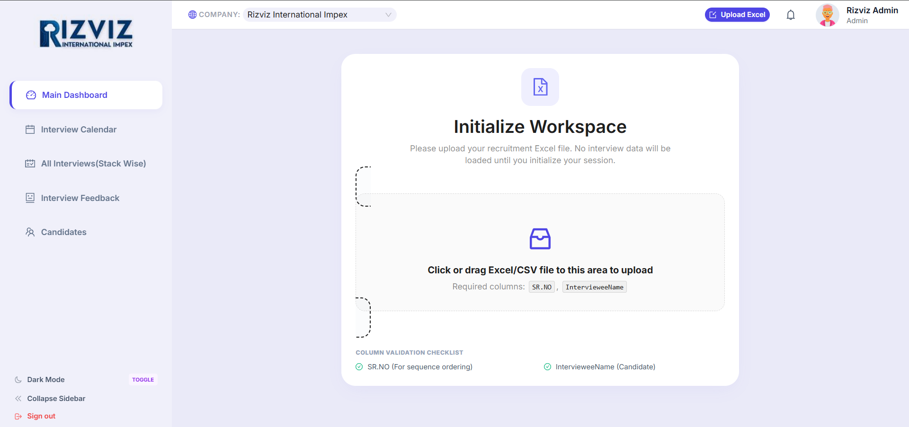
Below the screenshot, the initialization page consists of:
- Title Notice — "Initialize Workspace" message informing that no data will be loaded until the spreadsheet is uploaded.
- File Drag & Drop Box — Large container where users can click or drag their spreadsheet file to upload.
- Required Columns Checklist — Display of mandatory columns (
SR.NOandIntervieweeName). - Validation Indicators — Live green checklist showing sequence and candidate name correctness.
- Header — Displays the selected company ("Rizviz International Impex") and active administrator details ("Rizviz Admin").
- Navigation Sidebar — Links to Dashboard, Calendar, Interviews, AI Feedback, and Candidates modules.
Column Mapping Requirements
| Column | Status | Description / Purpose |
|---|---|---|
| SR.NO | Required | For sequence ordering of interview entries |
| IntervieweeName | Required | Full name of the candidate/interviewee |
3. Management Dashboard
Once the workspace is initialized by uploading the recruitment spreadsheet (or when logging in with an already-initialized session), the Management Dashboard opens automatically. It provides a real-time consolidated view of recruitment activity, lead generation, and interview pipelines.
URL: localhost:3000/dashboard or rizviz-interviews-portal.vercel.app/dashboard
Dashboard — Live Recruitment Pipeline Overview
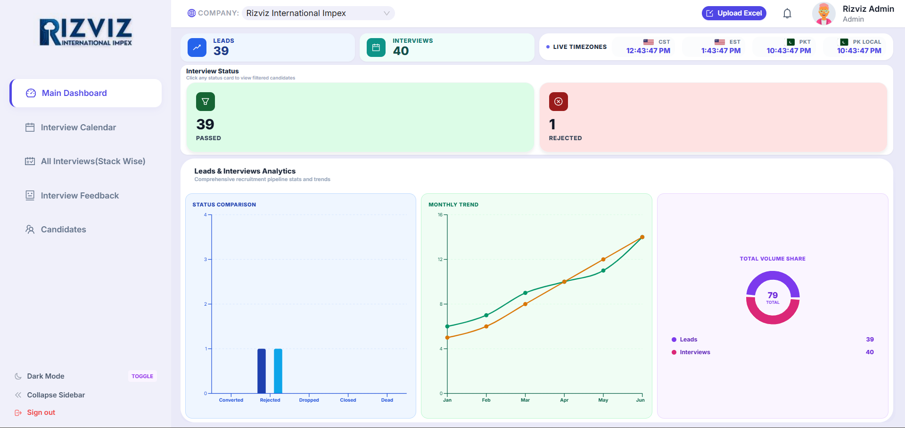
Below the screenshot, the dashboard provides a high-level summary divided into key sections:
- Header — Displays selected company, the "Upload Excel" action button, notification icon, and logged-in administrator details.
- Top-Level Metrics — Summary cards for "LEADS" and "INTERVIEWS" showing total counts.
- Live Timezones — Real-time clock widgets showing CST, EST, PKT, and Pakistan Local time.
- Interview Status Cards — Visual counters for candidates by status, including "PASSED" and "REJECTED". Clicking a card filters the candidate list.
Main Dashboard Metrics
| Card / Widget | Value | Description |
|---|---|---|
| LEADS | 39 | Total leads compiled from synchronization |
| INTERVIEWS | 40 | Total scheduled/recorded interviews |
| PASSED | 39 | Candidates who successfully cleared the interviews |
| REJECTED | 1 | Candidates marked as rejected |
Leads & Interviews Analytics
The bottom section of the dashboard displays detailed charts and visual trends based on the imported database:
- Status Comparison — Bar chart visualizing candidates across different stages (Converted, Rejected, Dropped, Closed, Dead).
- Monthly Trend — Line chart tracing Leads (blue/green) and Interviews (orange) volume growth from January through June.
- Total Volume Share — Donut chart highlighting the breakdown of the total 79 items (39 Leads and 40 Interviews) to show relative weight.
Dashboard — Dark Mode View
Toggle between Light and Dark mode using the sidebar switch. Dark mode styles the entire interface with a sleek, dark color scheme to optimize visibility in low-light environments while preserving chart clarity.
3.1 Interview Calendar Module
The Interview Calendar plots all interview events on a month-by-month grid, allowing administrators to visually track scheduled, completed, and upcoming interviews.
URL: localhost:3000/interviews/calendar or rizviz-interviews-portal.vercel.app/interviews/calendar
Calendar View — Full Month Grid (Top Section)
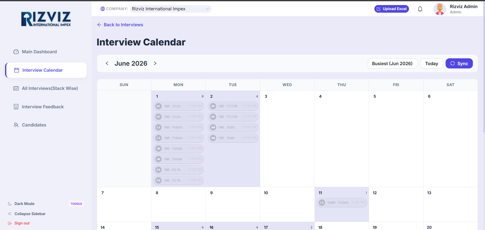
The main calendar view shows the full month of June 2026 in a standard week grid (SUN–SAT). Key elements include:
- Back to Interviews — Link at top to return to the Interviews table.
- Month Navigation — « June 2026 » arrows to move between months.
- Busiest (Jun 2026) — Button that highlights the month with the highest interview volume.
- Today — Button to jump to the current date (highlighted with a blue circle, e.g. 23rd).
- Sync — Button to refresh calendar data from the database.
- Event Chips — Each chip shows the candidate initials, company name, and time (e.g. HT · 1st · Occa... · 12:00 PM).
Calendar Color Coding — Gray vs Colored Events
| Event Chip Color | Status | Meaning |
|---|---|---|
| Gray (Disabled / Muted) | Done / Happened | Interviews that have already been conducted or completed appear in gray, indicating they are past events. |
| Colored (Purple / Blue / Green / Orange) | Upcoming / Scheduled | Interviews that are scheduled and will happen in the future appear in their respective status colors. |
Calendar View — Bottom Section & No Date on File
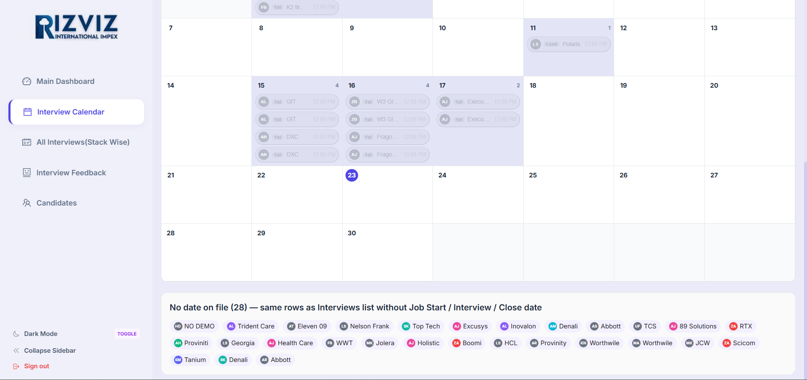
The bottom portion of the calendar continues the monthly grid and includes a special "No date on file" section:
- Continued Grid — Weeks 2–5 of June showing events on dates 7–30.
- Colored event on Thu 11 — A green-colored chip (LS · Land · Polaris · 12:00 PM) indicates an upcoming scheduled interview.
- Gray events on Mon 15, Tue 16, Wed 17 — Muted chips for companies like GIT, DXC, W3 Gl..., Execu..., Frago... indicate completed/past interviews.
- No date on file (28) — A footer section listing 28 interview records that have no Job Start / Interview / Close date assigned.
- Company Badges — Color-coded company initials (e.g. NO DEMO, Trident Care, Eleven 09, Nelson Frank, Top Tech, Excusys, Inovalon, Denali, Abbott, TCS, 89 Solutions, RTX, etc.) showing which candidates lack scheduling data.
Calendar View — Event Detail Tooltip (Hover)
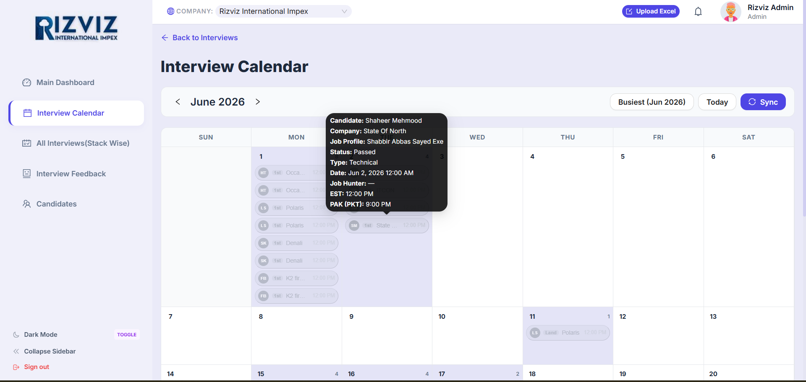
Hovering over any event chip on the calendar reveals a detailed tooltip with the full interview record:
| Field | Example Value |
|---|---|
| Candidate | Shaheer Mehmood |
| Company | State Of North |
| Job Profile | Shabbir Abbas Sayed Exe |
| Status | Passed |
| Type | Technical |
| Date | Jun 2, 2026 12:00 AM |
| Job Hunter | — |
| EST | 12:00 PM |
| PAK (PKT) | 9:00 PM |
The tooltip provides instant access to candidate details without leaving the calendar view. It displays the candidate name, company, job profile, interview status, type, date, and timezone conversions (EST and PKT).
4. All Interviews (Stack Wise)
The Interviews Module displays all interview records synced from the uploaded Excel spreadsheet. Administrators can search, filter, edit, delete, and export interview data. The module is labeled "All Interviews (Stack Wise)" in the sidebar navigation.
URL: localhost:3000/interviews or rizviz-interviews-portal.vercel.app/interviews
Interviews — KPI Cards, Filters, and Table Header
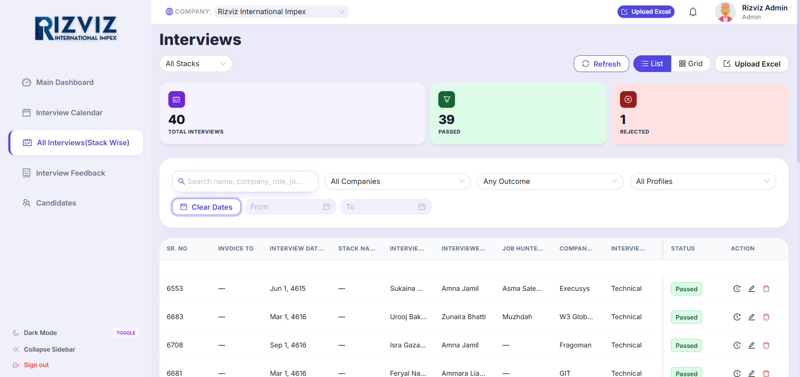
The top section of the Interviews page provides a high-level summary and filtering capabilities:
- Stack Selector — Dropdown labeled "All Stacks" to filter by interview stack/category.
- View Toggle — Switch between Refresh, List (default), Grid, and Upload Excel views.
- KPI Summary Cards:
| Card | Value | Color | Description |
|---|---|---|---|
| TOTAL INTERVIEWS | 40 | Blue | Total interview records loaded from the Excel file |
| PASSED | 39 | Green | Candidates who successfully cleared the interview |
| REJECTED | 1 | Red/Pink | Candidates marked as rejected |
Search & Filter Bar
| Filter | Description |
|---|---|
| Search | Free-text search by name, company, role, or job profile |
| All Companies | Dropdown to filter by specific company (e.g. Excusys, W3 Global, Fragoman, GIT, DXC, etc.) |
| Any Outcome | Filter by interview outcome status (Passed, Rejected) |
| All Profiles | Filter by interview type/profile (Technical, HR, Combined) |
| Date Range (From / To) | Filter interviews by date range with calendar date pickers |
| Clear Dates | Button to reset the date range filter |
Interview Table — Column Headers
| Column | Description |
|---|---|
| SR. NO | Unique serial number from the Excel sheet — primary sync match key |
| INVOICE TO | Entity or client interviewed for |
| INTERVIEW DATE | Scheduled or actual interview date |
| STACK NAME | Technical stack or category name |
| INTERVIEWER | Name of the person conducting the interview |
| INTERVIEWEE | Name of the candidate being interviewed |
| JOB HUNTER | Recruiter or job hunter who sourced the candidate |
| COMPANY | Target client/company name (e.g. Excusys, W3 Global, Fragoman, GIT) |
| INTERVIEW TYPE | Type of interview: Technical, HR, Combined, etc. |
| STATUS | Color-coded badge: Passed (green) or Rejected (red) |
| ACTION | Row actions: History (clock icon), Edit (pencil icon), Delete (trash icon) |
Interviews Table — Data Rows (Middle Section)
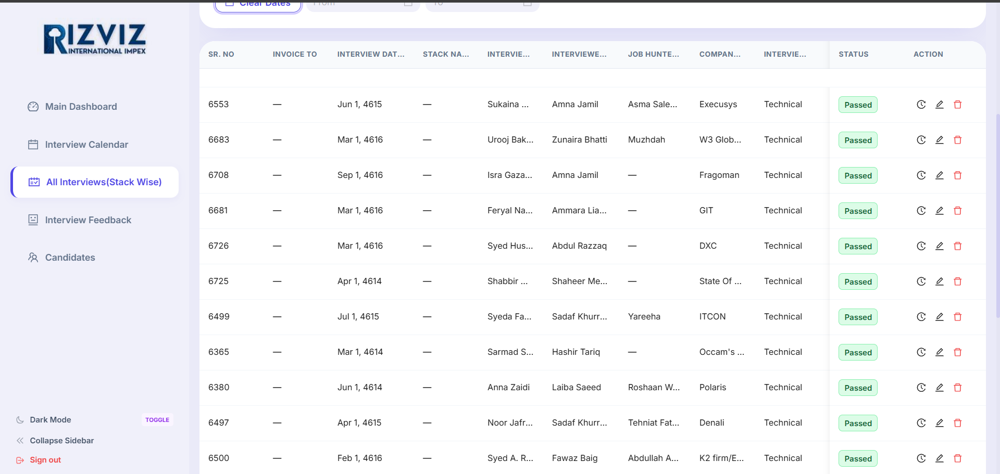
The table lists all interview records with the following sample data visible:
| SR. NO | Interviewer | Interviewee | Company | Status |
|---|---|---|---|---|
| 6553 | Sukaina... | Amna Jamil | Excusys | Passed |
| 6683 | Urooj Bak... | Zunaira Bhatti | W3 Global | Passed |
| 6708 | Isra Gaza... | Amna Jamil | Fragoman | Passed |
| 6681 | Feryal Na... | Ammara Lia... | GIT | Passed |
| 6726 | Syed Hus... | Abdul Razzaq | DXC | Passed |
| 6725 | Shabbir... | Shaheer Me... | State Of... | Passed |
| 6499 | Syeda Fa... | Sadaf Khurr... | ITCON | Passed |
| 6365 | Sarmad S... | Hashir Tariq | Occam's... | Passed |
| 6380 | Anna Zaidi | Laiba Saeed | Polaris | Passed |
| 6497 | Noor Jafr... | Sadaf Khurr... | Denali | Passed |
| 6500 | Syed A. R... | Fawaz Baig | K2 firm/E... | Passed |
Row Action Icons
| Icon | Function |
|---|---|
| Clock (History) | View the full change log for this interview record — shows all sync history, reschedules, cancellations, and data changes |
| Pencil (Edit) | Open the edit modal to modify interview details such as date, status, interviewer, company, and notes |
| Trash (Delete) | Delete the interview record permanently (requires confirmation) |
Interviews Table — Bottom Section & Pagination
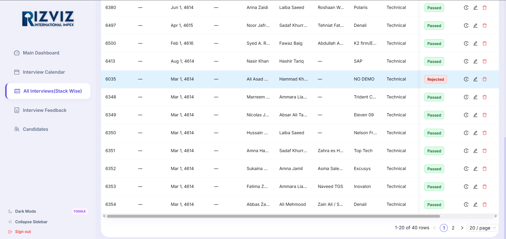
The bottom section of the interviews table continues displaying records and includes the pagination controls:
- Continued Rows — Rows from SR 6380 through SR 6354, showing candidates from companies like Polaris, Denali, K2 firm, SAP, NO DEMO, Trident C..., Eleven 09, Nelson Fr..., Top Tech, Excusys, Inovalon, and Denali.
- Rejected Row (Highlighted) — SR 6035 for candidate Hammad Kh... at company NO DEMO shows a red Rejected badge, visually distinguished from the green Passed badges.
- Horizontal Scrollbar — Appears at the bottom to scroll through all table columns when the viewport is narrow.
Pagination Controls
| Element | Description |
|---|---|
| Row Count | Displays "1-20 of 40 rows" showing the current page range and total record count |
| Page Navigation | Previous (<) and Next (>) arrows to navigate between pages |
| Page Numbers | Clickable page indicators (1, 2) for direct page access |
| Rows Per Page | Dropdown to change display density: 20 / page (default), configurable to 10, 50, or 100 |
5. Excel Sync — Interview Data Synchronization
All interview data in the system is sourced from an Excel spreadsheet. The platform supports two methods for syncing data: Manual Upload (via the Upload Excel button) and Automatic Watcher (file system monitoring in local development).
Upload Excel — How It Works
- Click the Upload Excel button (green button in the header bar or the toolbar).
- Select or drag your Excel file (
.xlsxor.csv) into the upload area. - The system validates the file for required columns:
SR.NOandIntervieweeName. - If validation passes, the data is parsed and compared with the existing database records.
- A Sync Summary modal appears showing: new rows added, changed rows updated, unchanged rows, and any failed rows.
- The interview table automatically refreshes with the latest data.
Refresh — Local File Sync
- Open Interview Software.xlsx on your local machine.
- Make changes — edit dates, names, statuses, or add new rows.
- Save the file with Ctrl+S.
- In the Interviews module, click the Refresh button.
- The system reads the updated Excel file, compares it with the database, and syncs changes.
- Review the sync summary modal for details on what changed.
Sync Summary — What Gets Compared
| Field | Description |
|---|---|
| New Rows | Records in Excel that don't exist in the database (matched by SR.NO) |
| Changed Rows | Records where one or more fields differ between Excel and database |
| Unchanged Rows | Records that are identical in both Excel and database |
| Failed Rows | Records that couldn't be synced due to validation errors or missing data |
| Deleted Rows | Records present in database but missing from the Excel file |
Excel File Requirements
| Requirement | Details |
|---|---|
| File Format | .xlsx (recommended) or .csv |
| Required Columns | SR.NO (sequence ordering) and IntervieweeName (candidate name) |
| Column Mapping | The system auto-maps columns by header name. Additional columns (Invoice To, Interview Date, Company, Status, etc.) are mapped automatically if present. |
| Max File Size | Up to 10 MB recommended for optimal performance |
last_uploaded_excel.xlsx on the server. This ensures continuity even if the original file is moved or renamed.6. AI Feedback Module
The AI Feedback Module captures, transcribes, and enhances candidate interview feedback using voice-to-text and AI text processing. It enables recruiters to input voice feedback (supporting bilingual Urdu/English speech), transcribe it automatically, and sync it immediately to the database and a Google Spreadsheet ledger.
URL: localhost:3000/interviews/feedback or rizviz-interviews-portal.vercel.app/interviews/feedback
Interview Feedback — Data Table
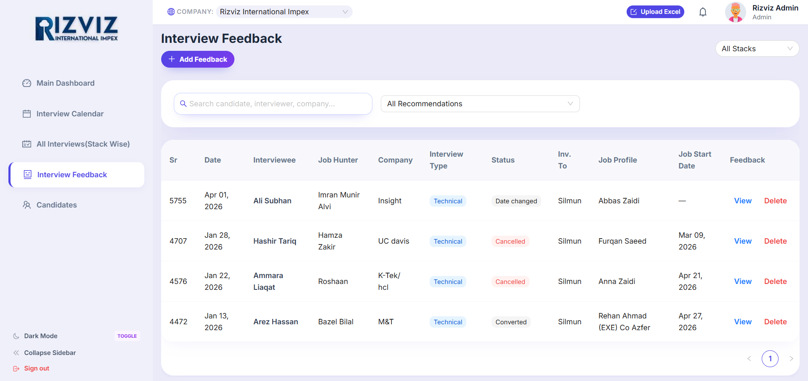
The Interview Feedback dashboard displays all logged feedback entries synced from the Google Sheets ledger:
- Add Feedback Button — Purple button labeled "+ Add Feedback" opens the AI Feedback entry form modal.
- Filters & Search — Filters by Interview Stack, Search input (candidate, interviewer, company), and Recommendations dropdown.
- Feedback Table — Displays key fields for each feedback entry: Sr, Date, Interviewee, Job Hunter, Company, Interview Type, Status, Invoice To, Job Profile, Job Start Date, and Actions.
Status Badge Color Logic
| Status | Badge Color | Meaning |
|---|---|---|
| Converted | Green | The candidate successfully cleared all rounds and was hired |
| Date changed | Grey / Muted | The interview was rescheduled to a different date |
| Cancelled | Red | The scheduled interview was cancelled |
| Rejected | Red | The candidate did not pass the interview round |
| Postponed / Dropped | Orange | The interview was deferred or candidate was dropped from the process |
Row Action Buttons
| Button | Action / Function |
|---|---|
| View (Blue link) | Opens a read-only details modal containing the transcribed text, strengths, weaknesses, and ratings |
| Delete (Red link) | Permanently deletes the feedback entry from both the database and the synced Google Spreadsheet |
Add Feedback Modal — Voice Input & Interview Selector
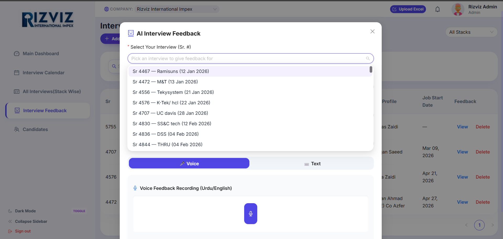
Clicking "+ Add Feedback" opens a modal overlay allowing recruiters to record or type feedback:
- Select Your Interview (Sr. #) — Dropdown containing pending interviews loaded from the main database (e.g. Sr 4467 — Ramisuns, Sr 4472 — M&T, Sr 4556 — Tekysystem, etc.).
- Voice / Text Tabs — Toggle input modes. Voice allows direct voice recording; Text allows typing notes.
- Voice Recording Button — A large blue microphone button to start and stop audio recording. It supports bilingual Urdu and English speech.
Add Feedback Modal — Automated Information Autofill
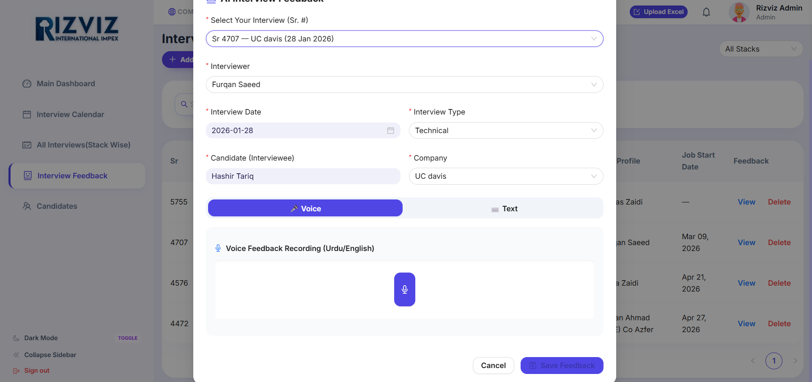
Selecting an interview Sr. # automatically fills in all related record fields to ensure data accuracy and speed up processing:
| Autofilled Field | Source / Description |
|---|---|
| Interviewer | Auto-populated name of the interviewer (e.g., Furqan Saeed) |
| Interview Date | Auto-populated date of the interview (e.g., 2026-01-28) |
| Interview Type | Auto-populated interview type (e.g., Technical, HR, Combined) |
| Candidate (Interviewee) | Auto-populated candidate name (e.g., Hashir Tariq) |
| Company | Auto-populated target client company (e.g., UC davis) |
Submitting Feedback
- Select the interview Sr. # from the dropdown list.
- Record audio using the Voice tab (or type notes in the Text tab).
- Review autofilled candidate and interviewer details.
- Click Save Feedback to finalize.
- The system processes audio using AI, saves the record, and triggers synchronization.
6.1 Google Sheets Synchronization
The system integrates directly with a live Google Spreadsheet to maintain a collaborative and real-time backup ledger of all interview feedback. This allows team members without direct ERP access to view and analyze recruitment metrics in Google Workspace.
Google Sheets Synchronization Ledger
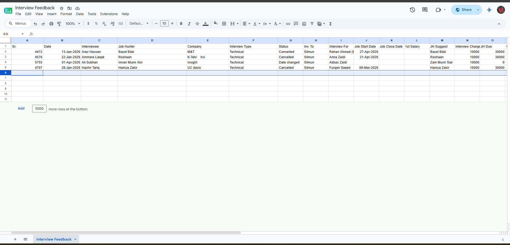
The Google Sheet matches the ERP database columns precisely and is updated automatically:
- Real-time Sync Triggers — Adding or deleting a feedback record in the ERP immediately sends an API request to update the Google Sheet.
- Bidirectional Consistency — The row structure in the sheet aligns perfectly with the ERP table, showcasing columns for candidate profile, job hunter, client, status, job dates, and salary figures.
- Collaborative Sharing — The sheet can be shared securely with senior stakeholders who need real-time summaries of candidate evaluations.
Google Sheets Ledger Columns
| Column Name | ERP Mapping | Description |
|---|---|---|
| Sr. | SR. NO | Match key sequence number from Excel sheet |
| Date | INTERVIEW DATE | Interview schedule date |
| Interviewee | CANDIDATE NAME | Candidate name |
| Job Hunter / Company | RECRUITER / CLIENT | Source recruiter and client company details |
| Status | OUTCOME STATUS | Synced outcome (Converted, Cancelled, Date changed, etc.) |
| Job Start Date | START DATE | Scheduled starting date of candidate |
| JH Suggest / Due | RECRUITER DETAILS | Recruitment fee and candidate status tracking details |
6.2 Candidates Directory Module
The Candidates Directory Module provides an aggregated, candidate-centric view of all recruitment activities. Instead of browsing individual interviews, administrators can search for a specific candidate to see their entire history, including their total count of interviews, leads, companies applied to, and detailed outcome status.
URL: localhost:3000/candidates or rizviz-interviews-portal.vercel.app/candidates
Candidates Directory Grid View
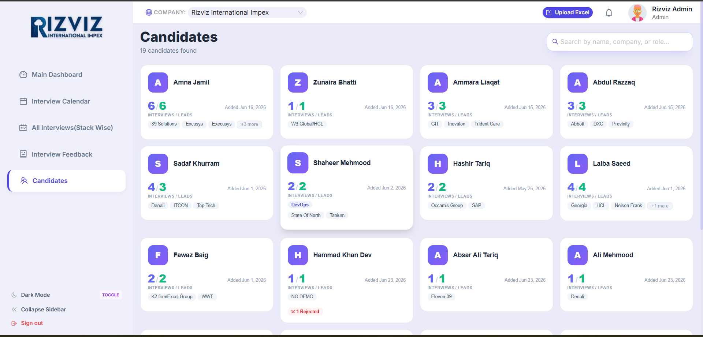
The main screen lists all candidates in a responsive card grid layout:
- Total Count — Labeled e.g. "19 candidates found" to show the size of the talent pool.
- Search Bar — Labeled "Search by name, company, or role..." for immediate real-time filtering.
- Candidate Cards — Individual summary cards showing the candidate's initials, name, ratio of interviews/leads, date added, and company tags.
- Outcome Flags — Rejections are flagged directly on the cards (e.g. "x 1 Rejected" on Hammad Khan Dev's card).
Candidate Card Components
| Component | Description |
|---|---|
| Initials Badge | Large circular badge (e.g. 'A' for Amna Jamil, 'Z' for Zunaira Bhatti) in category-specific colors. |
| Interviews / Leads Ratio | Shows active participation (e.g., '6/6' indicating 6 interviews conducted for 6 matching leads). |
| Company Badges | Horizontal tags showing all clients the candidate has interacted with (e.g., Excusys, HCL, Trident Care). |
| Added Date | Timestamp displaying when the candidate was first introduced to the system (e.g., 'Added Jun 15, 2026'). |
Candidate Profile Drawer
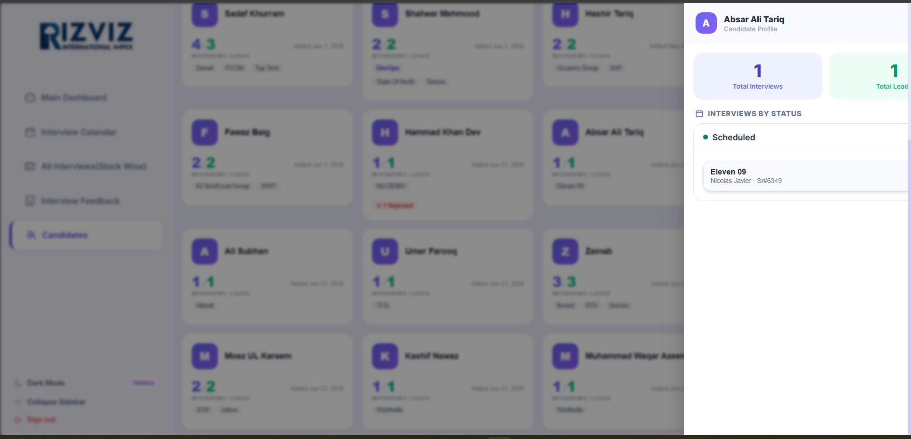
Clicking on any candidate card slides out the Candidate Profile Drawer from the right side of the screen:
- Aggregated Statistics — Top cards displaying "Total Interviews" and "Total Leads" for the selected candidate.
- Interviews by Status — Chronological breakdown of interviews, grouped by their status (e.g. Scheduled, Completed, Rejected).
- Interactive Entries — Clicking any individual interview item in the list slides out a secondary details panel.
Interview Details & Feedback Drawer
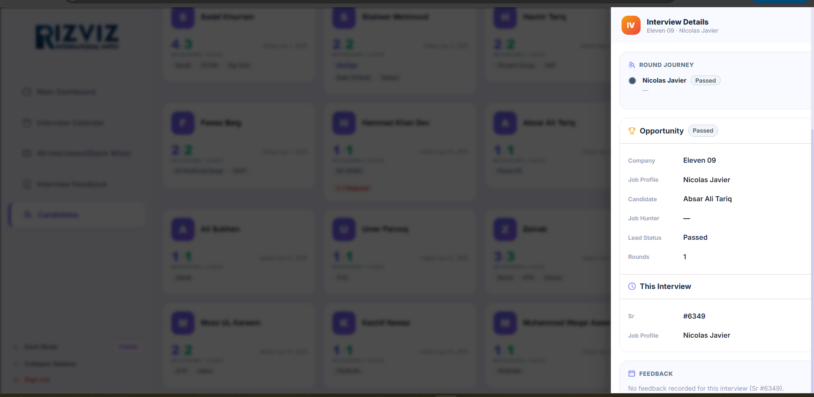
The nested drawer displays the complete metadata of the selected interview session:
| Section | Details Provided |
|---|---|
| Round Journey | Step-by-step progress tracking with candidate status (e.g., Nicolas Javier - Passed). |
| Opportunity Info | Comprehensive record details: Company name, Job Profile, Candidate Name, Sourcing Job Hunter, Lead Status, and number of rounds. |
| This Interview | Unique Sr # matching key and Job Profile name. |
| Feedback Panel | Shows the AI-enhanced feedback, transcription text, candidate strengths, weaknesses, and ratings (or 'No feedback recorded' if empty). |